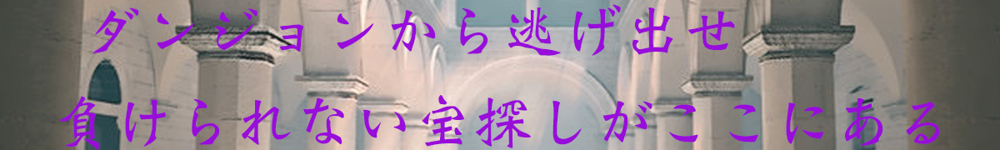

第一関門千里の道も一歩から
ダンジョンの奥へと続くであろう扉が目の前にある。しかし、キーワードを唱えないと鍵が開かないようだ。
下の画像の謎を解き、解答欄に入力しよう。
困ったときは、助けてもらおう。でもなるべく自力で頑張れ！
第二関門美しい花には棘がある
ダンジョン奥へと進む一行だったが、そこに突如として現れた鍾乳洞。
あまりに美しさに気を取られ、鍾乳洞の天井が下がってきていることに気づくのが遅れてしまった！
石板に書かれた暗号の答えを解答欄に記入し、天井の動きを止めよう。
第三関門急がば回れ
お宝発見！！だが、一面溶岩がありお宝のあるところまで進めない。
よく見ると溶岩の水位が少しずつ上昇している。早くお宝を手に入れて脱出しなければ！
床に記された暗号をとき、お宝まで道を作っていこう。